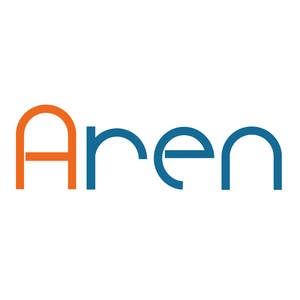

Trade Mark Journal No.2025/014 4 April 2025
UK00004169799 6 March 2025 (11,37)

- Class 11
- Bath plumbing fixtures; Sanitary and bathroom installations and plumbing fixtures; Spouts [plumbing fittings]; Aerators for faucets [plumbing fittings]; Valves [plumbing fittings]; Cocks [plumbing fittings]; Sink sprayers [plumbing fittings]; Faucet filters [plumbing fittings]; Bibcocks [plumbing fittings]; Sink strainers [plumbing fittings]; Shower sprayers [plumbing fittings]; Flexible pipes being parts of sink plumbing installations; Flexible pipes being parts of shower plumbing installations; Flexible pipes being parts of bath plumbing installations; Shower control valves [plumbing fittings]; Tub control valves [plumbing fittings]; Manually-operated plumbing valves; Flexible pipes being parts of basin plumbing installations; Faucets for pipes; Safety fittings for water pipes; Faucets for pipes and pipelines; Safety fittings for gas pipes; Sanitary water conduit fittings; Regulatory fittings for water pipes; Electrical radiators; Electrical boilers; Valves [faucets] being parts for sanitary installations; Pipes for heating boilers; Boiler pipes [tubes] for heating installations; Indoor electrical lighting fixtures; Sanitary water fittings; Mixer faucets for water pipes; Waste pipes for sanitary installations; Electrical appliances for cooking; Electrical lighting fixtures; Outdoor electrical lighting fixtures; Pipes [parts of sanitary installations]; Heating installations [water]; Water heating installations; Regulating fittings for water pipes; Water faucets; Sanitary installations, water supply and sanitation equipment; Indoor fluorescent electrical lighting fittings; Water taps being parts of sanitary installations; Appliances for heating; Gas water heaters [for household use]; Washers for water faucets; Urinals [sanitary fixtures]; Urinals being sanitary fixtures.
- Class 37
- Plumbing; Renovation of plumbing; Installation of plumbing; Maintenance of plumbing; Plumbing services; Plumbing and gas and water installation; Cleaning of water supply plumbing; Installation of plumbing systems; Plumbing installation, maintenance and repair; Plumbing repair advisory services; Plumbing installation advisory services; Plumbing maintenance advisory services; Advisory services relating to the repair of plumbing; Heating contractor services; Installation of water pipes; Maintenance, servicing and repair of household and kitchen appliances; Repair or maintenance of gas water heaters; Boiler cleaning and repair; Boiler cleaning services; Maintenance and repair of gas and electricity installations; Boiler repair services; Repair of sanitary installations; Heating equipment installation and repair; Installation and repair of heating equipment; Maintaining and repair of drain pipes; Insulation of pipes; Repair of household and kitchen appliances; Repair of water supply installations; Advice relating to preventing blockages in plumbing lines; Services for the installation of sewers; Installation of pipework systems; Maintenance and repair of solar heating installations; Pipe installation services; Maintenance and repair of heating installations; Heating equipment repair; Installation of fixtures and fittings for domestic premises; Installation, repair and maintenance of heating equipment.
Aren Property Services Limited